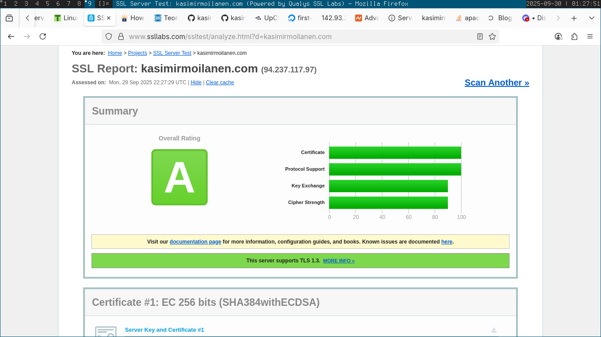

Let's Encryptin ja ACME-protokollan tavoite on automatisoida HTTPS-serverin ja sertifikaattien asettaminen.
Let's Encrypt tunnistaa ACME-clientin julkisella avaimella. Ensimmäisellä kerralla ACME-client generoi uuden avainparin ja todentaa Let's Encryptille kontrolloivansa domainia. Kun client on autorisoitu, sertifikaattien kontrolloiminen on helppoa avainparilla autorisoiduilla viesteillä.
SSL-konfigurointi Apachessa (ymmärtääkseni tämänkin voi automatisoida kun käyttää certbotia):
LoadModule ssl_module modules/mod_ssl.so
Listen 443
ServerName www.example.com
SSLEngine on
SSLCertificateFile "/path/to/www.example.com.cert"
SSLCertificateKeyFile "/path/to/www.example.com.key"
Asensin certbotin:
sudo apt-get install certbot
Ajoin certbotin:
sudo certbot --apache --domains kasimirmoilanen.com,www.kasimirmoilanen.com
HTTPS-sivu lähti toimimaan:
Lopuksi testailin SSLLabsia, kaikki näytti olevan kunnossa:
